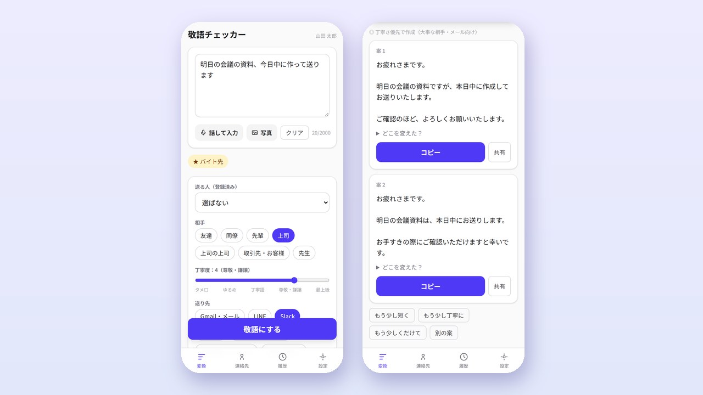
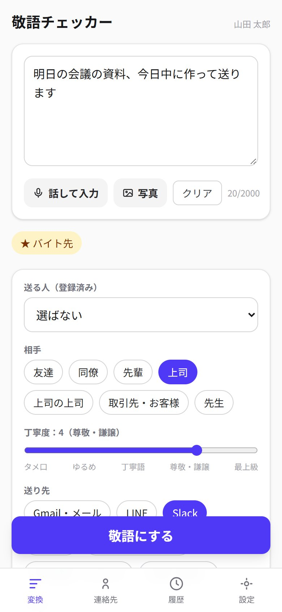
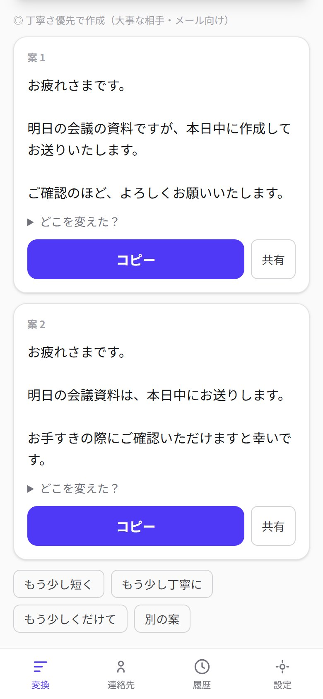
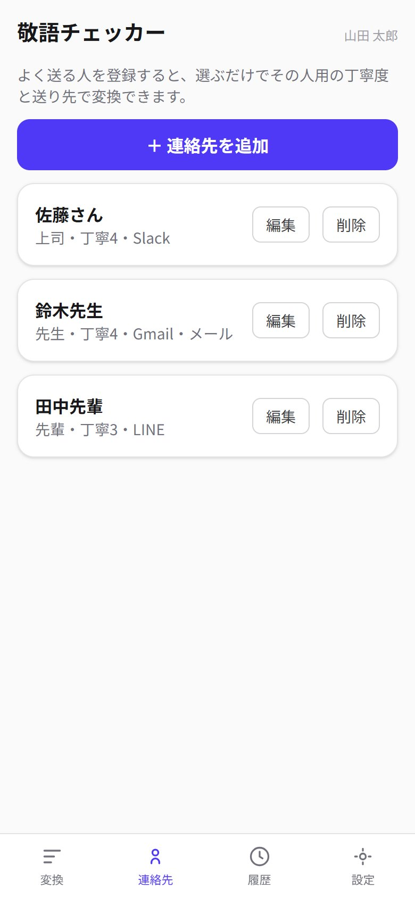
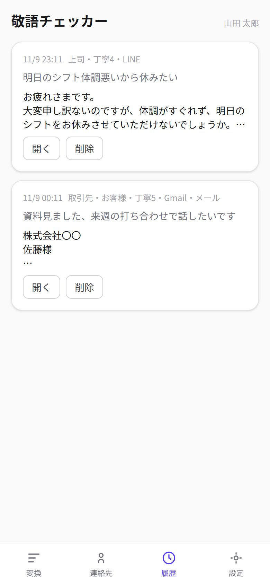

01 / Challenge · 解決したいこと
バイト先の店長や先生、インターン先の人に連絡するたびに、敬語が合っているか不安で、文章を考えるのに時間がかかっていた。言いたいことは決まっているのに、「伺います」と「参ります」のどちらか、件名はどうするか、LINEとメールで書き方を変えるべきか、で毎回手が止まる。
Work / 2026
話し言葉のまま入れた文章を、相手・丁寧度・送り先に合わせて、そのまま送れる敬語にするアプリ。上司へのSlackも、先生へのメールも、選んで押すだけで2つの案が出る。

バイト先の店長や先生、インターン先の人に連絡するたびに、敬語が合っているか不安で、文章を考えるのに時間がかかっていた。言いたいことは決まっているのに、「伺います」と「参ります」のどちらか、件名はどうするか、LINEとメールで書き方を変えるべきか、で毎回手が止まる。
伝えたいことを話し言葉のまま打つか、マイクで話すだけで、相手（友達・先輩・上司・取引先・先生など）と丁寧度、送り先（メール・LINE・Slack・DMなど）に合わせた文章を2案返すアプリ。よく送る人を連絡先に登録しておけば、選ぶだけで丁寧度と送り先がそろう。会話のスクリーンショットを添付して、その返信を作ることもできる。




画面と変換サーバーは Next.js（App Router）/ React / TypeScript / Tailwind CSS で、Vercel の東京リージョンで動かしている。文章づくりは Gemini API で、結果はJSONを書けた分から画面に流して表示する。ログインと、連絡先・保存した条件・履歴・署名の保存は Supabase（行レベルセキュリティで本人のデータだけ読める）。変換中にアプリを離れても、終わったら Web Push でスマホに通知する。
ふだんの相手には速い軽量モデル、上司・取引先・メール・謝罪のような失敗できない場面では敬語に強いモデルを自動で使い分けている。重いモデルが混んで応答しないときは、十数秒で見切ってもう一方のモデルで作り直すようにして、「待たされた末に失敗する」をなくした。アカウントを作れば誰でも使えます。下の画面は手元で動かしたときの架空のデータです。